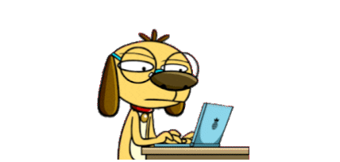

I leave at Parit Buntar, Perak and currently in my Degree journey in course Office Systems Management (HONS) at UiTM Machang, Kelantan. I was born on 17th April 1999 at Hospital Parit Buntar, Perak. I staying in a happy family and i have two sibling. My father is from Parit Buntar, Perak and my mother is from Tanjung Piandang, Perak. My Primary school is at SK Titi Serong and my Secondary school is at SMK Seri Perak.
Hobby is something that someone likes to do in his past time, a spare-time recreational pursuit and My hobby is explore new things such as new places, new environment and new food. I love to travell and i fell blessed because i am staying in a
state which is near with others state such as Kedah and Penang. I always go to Penang during holiday. At there got so many interesting place such as:
